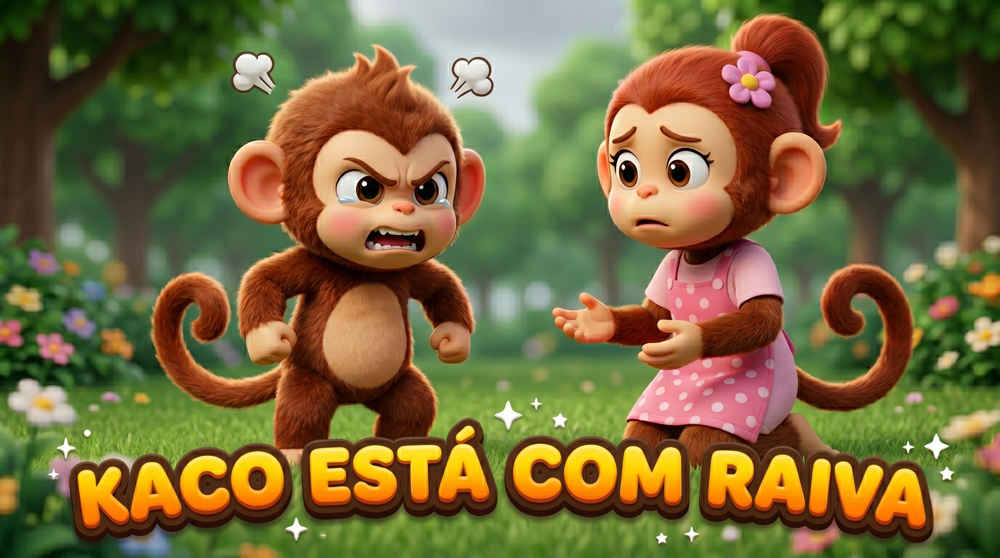

← Voltar pras Emoções
O Kaco ficou bravo quando o passeio não saiu como ele queria. Olha como o corpo dele reage!
😠
O que é a raiva?
A raiva é uma energia quente que sobe no meu peito quando alguma coisa parece injusta, ou quando eu não consigo fazer o que eu queria. Ela não é feia nem errada: é o meu corpo avisando que algo me incomodou.
Como o meu corpo fica
✊ Punho fechado
🔥 Rosto quente
💓 Coração acelerado
😤 Vontade de gritar
😣 Barriga apertada
Quando eu percebo esses sinais, já sei: a raiva chegou. E tudo bem.
O Kaco também sente

O que eu posso fazer
- 🫁Respiro fundo. Puxo o ar bem devagar pelo nariz e solto pela boca.
- 🔟Conto até dez, bem devagarinho.
- 🚶Saio um pouquinho do lugar até o meu corpo esfriar.
- 🧸Aperto bem forte um travesseiro ou abraço o meu bichinho.
- 💬Quando eu acalmo, eu falo o que senti, com calma.
Vamos respirar com o Kaco 🐒
Siga a bolinha: enche o ar devagar e solta devagar.
respira…
Sentir raiva é normal, todo mundo sente. O que importa é o que a gente faz com ela. E você nunca está sozinho. 💛